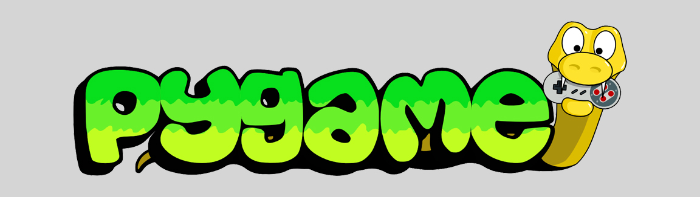

The Pros and Cons of Pygame
For beginners looking to take their first steps into the world of game development, choosing the right framework or game engine can feel crucial (though getting started is more important that the path you choose). One of the most popular options for aspiring game developers, especially those with Python experience, is Pygame. Pygame is a set of Python modules designed for creating video games. It provides functionalities for rendering graphics, handling user input, and managing game loops.
But is Pygame the best choice for learning game development? In this post, we’ll explore the pros and cons of using Pygame and compare it with some popular alternatives.
Pros of Using Pygame
1. Beginner-Friendly and Python-Based
Pygame is an excellent choice for beginners, especially those who are already familiar with Python. Since Python is known for its readability and simplicity, working with Pygame allows new developers to focus on learning game development concepts rather than struggling with complex syntax.
2. Lightweight and Easy to Set Up
Unlike some game engines that require significant disk space and extensive setup, Pygame is lightweight and can be installed quickly with a simple command:
pip install pygame
This ease of installation makes it accessible to beginners who want to start developing games without dealing with complex configurations.
3. Full Control Over Game Logic
Since Pygame is a library rather than a full-fledged game engine, it gives developers complete control over game logic and mechanics. Unlike high-level engines that abstract many details, Pygame requires you to implement features manually, which is beneficial for learning how games truly work under the hood.
4. Large Community and Plenty of Learning Resources
Pygame has been around for over two decades, and during this time, it has built a strong community of developers. There are numerous tutorials, documentation, and forums where beginners can find help and guidance.
5. Cross-Platform Compatibility
Since Pygame is built with Python, it runs on multiple platforms, including Windows, macOS, and Linux. This makes it easy to develop games that can be played on different operating systems without needing major modifications.
6. Good for 2D Game Development
If you’re interested in developing simple 2D games (like most retro games), Pygame is a solid choice. It provides built-in support for handling images, animations, sounds, and input, making it well-suited for classic arcade-style games like Pong, Frogger, Snake, Asteroids, etc.
Cons of Using Pygame
1. Not Suitable for 3D Games
Pygame is primarily designed for 2D game development. If you’re interested in creating 3D games, you’ll need to use a different framework, such as Panda3D or a full game engine like Unity or Unreal Engine. Though, for beginners, we believe building 2d retro game clones is the best way to get started.
2. Lacks Advanced Features of Modern Game Engines
Unlike popular game engines like Unity or Godot, Pygame does not provide built-in features like physics engines, level editors, or visual scripting tools. Developers must implement many functionalities from scratch, which can be time-consuming.
3. Performance Limitations
Since Pygame is built on Python, it is not as fast as game engines written in C++ or other compiled languages. For simple games, this is unlikely to be an issue, but performance can become a concern when developing more complex games with many moving objects and effects.
4. Steeper Learning Curve for Game Design Concepts
While Pygame is great for learning programming, it does not include tools that help with game design, such as drag-and-drop editors or prefabricated components. Beginners may struggle with structuring their game code properly and managing assets efficiently.
5. Limited Commercial Potential
While it’s possible to create commercial games with Pygame, most professional game developers opt for engines with better performance, built-in monetization tools, and larger ecosystems. If your goal is to build a career in game development, learning a more widely used engine might be beneficial in the long run.
Popular Alternatives to Pygame
If you’re considering Pygame but want to explore other options, here are some alternatives that may better suit your needs:
1. Godot
- Pros: Free and open-source, supports both 2D and 3D game development, has a built-in scripting language (GDScript) similar to Python, lightweight, and comes with a visual editor.
- Cons: Smaller community compared to Unity, fewer third-party assets and plugins.
2. Unity
- Pros: Industry-standard engine, supports both 2D and 3D development, vast community and resources, asset store with thousands of assets, C# scripting language.
- Cons: Steeper learning curve than Pygame, requires installation of a large IDE, can be overwhelming for beginners.
3. Unreal Engine
- Pros: Powerful graphics capabilities, excellent for AAA-quality games, supports both Blueprint visual scripting and C++ coding, widely used in the gaming industry.
- Cons: High system requirements, complex for beginners, overkill for small 2D projects.
- Pros: Extremely beginner-friendly, drag-and-drop interface, great for kids and non-programmers, teaches basic programming concepts.
- Cons: Limited to simple 2D games, not suitable for professional development.
- Pros: Uses JavaScript, ideal for browser-based games, lightweight, good performance, strong community support.
- Cons: Requires knowledge of JavaScript, not as powerful for desktop or mobile games compared to Unity or Unreal.
4. Scratch (for Absolute Beginners)
5. Phaser (for Web-Based Games)
Final Thoughts
Pygame is an excellent choice for beginners who want to learn the fundamentals of game development using Python. It provides a hands-on approach to coding game mechanics from scratch, making it a valuable learning tool and our recommendation for where aspiring game developers should begin. If your goal is to develop complex or commercial games, you may eventually need to transition to a more advanced game engine.
Ultimately, the best framework or engine depends on your goals. If you’re a beginner looking for a simple way to get started with game programming, Pygame is a great option. If you want to create high-performance, feature-rich games, you might be better off exploring alternatives like Godot, Unity, or Unreal Engine.
Whatever path you choose, the key to progressing as a game developer is to get started. Too many hem and haw so long over which path take that they never take their first step. Don't let that be you.